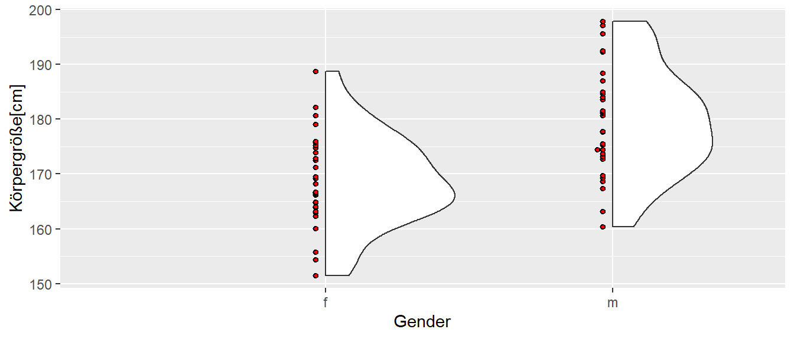
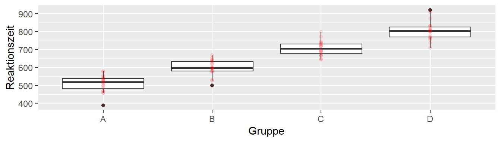
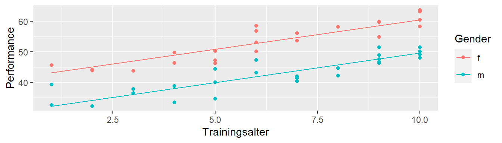
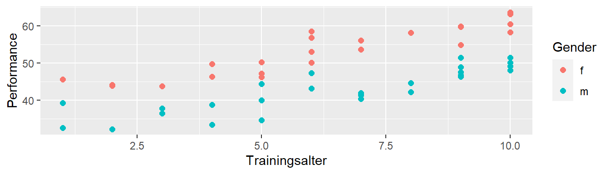

11 Integration von nominale Variablen
11.1 Beispiel: Körpergröße bei Frauen und Männern
11.2 Datensatz
| cm | gender |
|---|---|
| 174.4 | m |
| 177.7 | m |
| 195.6 | m |
| 171.3 | f |
| 164.0 | f |
| 176.0 | f |
11.3 Nominale Variablen in R
Nominale Variablen werden in R als factor() dargestellt.
gender <- factor(c(0,0,1,1),
levels = c(0,1),
labels = c('m','f'))
gender[1] m m f f
Levels: m f11.4 t-Test in R mit t.test()
t.test(cm ~ gender, data=height, var.equal=T)
Two Sample t-test
data: cm by gender
t = -4.57, df = 58, p-value = <0.001
d = -10.75, s_e = 2.35
95 percent confidence interval
[-15.45, -6.04]11.5 Modellformulierung beim t-Test \((n_w = n_m)\)
\[\begin{align*} Y_{if} &= \mu_{f} + \epsilon_{if}, \quad \epsilon_{if} \sim \mathcal{N}(0,\sigma^2) \\ Y_{im} &= \mu_{m} + \epsilon_{im}, \quad \epsilon_{im} \sim \mathcal{N}(0,\sigma^2) \end{align*}\]
11.5.1 Hypothesen
\[\begin{align*} H_0&: \delta = 0 \\ H_1&: \delta \neq 0 \end{align*}\]
11.5.2 Teststatistik
\[ t = \frac{\bar{y}_m - \bar{y}_w}{\sqrt{\frac{s_m^2 + s_w^2}{2}}\sqrt{\frac{2}{n}}} \]
11.5.3 Referenzverteilung
\[ t \sim t_{df=2n-2} \]
11.6 Kann ich aus dem t-Test ein lineares Modell machen?
11.6.1 t-Test
\[\begin{align*} Y_{if} &= \mu_{f} + \epsilon_{if}, \quad \epsilon_{if} \sim \mathcal{N}(0,\sigma^2) \\ Y_{im} &= \mu_{m} + \epsilon_{im}, \quad \epsilon_{im} \sim \mathcal{N}(0,\sigma^2) \\ t &= \frac{\bar{y}_m - \bar{y}_w}{\sqrt{\frac{s_m^2 + s_w^2}{2}}\sqrt{\frac{2}{n}}} \\ t &\sim t_{df=2n-2} \end{align*}\]
11.6.2 Lineares Modell
\[\begin{align*} Y_i &= \beta_0 + \beta_1 \times x_i + \epsilon_i \\ \Delta_m &= \mu_m - \mu_f \\ Y_i &= \beta_0 + \beta_1 \times x_{??} + \epsilon_i \\ Y_i &= \mu_f + \Delta_{m} \times x_{??} + \epsilon_i \end{align*}\]
11.7 Dummy- oder Indikatorkodierung
\[\begin{align*} Y_i &= \mu_f + \Delta_{m} \times x_{1i} + \epsilon_i \\ \Delta_m &= \mu_m - \mu_f \\ x_1 &= \begin{cases} 0\text{ wenn weiblich}\\ 1\text{ wenn männlich} \end{cases} \end{align*}\]
Für eine nominale Variable wird eine Indikatorvariablen (Dummyvariable) definiert. Über diese Indikatorvariable kann die Zugehörigkeit eines Messwerts \(Y_i\) zu einer Faktorstufe \(k\) bestimmt werden. Eine Faktorstufe ist dabei immer die Referenzstufe bei der die Indikatorvariable gleich \(0\) ist.
11.8 Einfach mal stumpf in lm() eingeben
mod <- lm(cm ~ gender, height)| \(\hat{\beta}\) | \(s_e\) | t | p | |
|---|---|---|---|---|
| (Intercept) | 168.783 | 1.663 | 101.477 | <0.001 |
| genderm | 10.746 | 2.352 | 4.568 | <0.001 |
11.9 Vergleich der Konfidenzintervalle
11.9.1 Lineares Modell
confint(mod) 2.5 % 97.5 %
(Intercept) 165.45401 172.11276
genderm 6.03713 15.4540311.9.2 t-Test
t.test(cm ~ gender,
data = height,
var.equal=T)$conf[1] -15.45403 -6.03713
attr(,"conf.level")
[1] 0.9511.10 Auf welchen Werten wird ein lineares Modell gerechnet???
| cm | gender | \(x_1\) |
|---|---|---|
| 174.40 | m | 1 |
| 177.70 | m | 1 |
| 195.59 | m | 1 |
| 160.05 | f | 0 |
| 164.92 | f | 0 |
| 154.35 | f | 0 |
11.11 Residuen
11.12 Wen’s interessiert - t-Wert
Seien beide Gruppen gleich groß (\(n\)) mit \(N = n_m + n_w = 2 \times n\). Der t-Wert für \(\beta_1\) berechnet sich aus \(t = \frac{b_1}{s_b}\) mit:
\[ s_b = \sqrt{\frac{\sum_{i=1}^N (y_i - \bar{y})^2}{N-2}\frac{1}{\sum_{i=1}^N(x_i-\bar{x})^2}} \] Dadurch, das die \(x_i\) entweder gleich \(0\) oder \(1\) sind, ist \(\bar{x}=0.5\) und die Abweichungsquadrate im zweiten Term sind alle gleich \(\frac{1}{4}\).
\[ \sum_{i=1}^N(x_i - \bar{x})^2=\sum_{i=1}^N\left(x_i - \frac{1}{2}\right)^2 = \sum_{i=1}^N\frac{1}{4}=\frac{N}{4}=\frac{2n}{4}=\frac{n}{2} \]
Der ersten Term kann mit etwas Algebra und der Definition für die Stichprobenvarianz \(s^2\) auf die gewünschte Form gebracht werden.
\[ \frac{\sum_{i=1}^N(y_i-\hat{y})^2}{N-2}=\frac{\sum_{i=1}^n(\overbrace{y_{im} - \bar{y}_m}^{Männer})^2+\sum_{i=1}^n(\overbrace{y_{iw}-\bar{y}_w}^{Frauen})^2}{2(n-1)}=\frac{(n-1)s_m^2+(n-1)s_w^2}{2(n-1)}=\frac{s_m^2+s_w^2}{2} \]
11.13 Wen’s interessiert - \(\beta_1 = \mu_w - \mu_m\)
Mit \(s_x^2 = \frac{N\frac{1}{4}}{N-1} = \frac{N}{4(N-1)}\) \[\begin{align*} b_1 &= \frac{cov(x,y)}{s_x^2} \\ &= \frac{\sum_{i=1}^N(y_i - \bar{y})(x_i - \bar{x})}{N-1} \frac{4(N-1)}{N} \\ &= 4\frac{\sum_{i=1}^n(y_{im}-\bar{y})\frac{-1}{2}+\sum(y_{iw}-\bar{y})\frac{1}{2}}{N} \\ &= \frac{4}{2}\frac{\sum_{i=1}^n(y_{iw}-\bar{y}) - \sum_{i=1}^n(y_{im}-\bar{y})}{2n} \\ &= \frac{\sum_{i=1}^n y_{iw}}{n} - \frac{n\bar{y}}{n} - \frac{\sum_{i=1}^n y_{im}}{n} + \frac{n\bar{y}}{n} \\ &= \bar{y}_w - \bar{y}_m = \Delta \end{align*}\]
11.14 Wen’s interessiert - \(\beta_0 = \mu_m\)
Mit \(b_1 = \Delta = \bar{y}_w - \bar{y}_m\): \[\begin{align*} b_0 &= \bar{y} - \Delta \times \bar{x} \\ &= \frac{\sum_{i=1}^N y_i}{N} - \Delta \times \frac{1}{2} \\ &= \frac{\sum_{i=1}^n y_{im} + \sum_{i=1}^n y_{iw}}{2n} - \frac{1}{2}(\bar{y}_w - \bar{y}_m) \\ &= \frac{1}{2}\frac{\sum_{i=1}^ny_{im}}{n} + \frac{1}{2}\frac{\sum_{i=1}^ny_{iw}}{n} - \frac{1}{2}\bar{y}_w + \frac{1}{2}\bar{y}_m \\ &= \frac{1}{2}\bar{y}_m + \frac{1}{2}\bar{y}_w - \frac{1}{2}\bar{y}_w + \frac{1}{2}\bar{y}_m \\ &= \bar{y}_m \end{align*}\]
11.15 Können auch mehr als zwei Stufen verwendet werden?

11.16 Deskriptive Daten
11.17 Reaktionszeitexperiment als lineares Modell
11.17.1 Modell
\[ y_i = \mu_A + \Delta_{B-A} x_1 + \Delta_{C-A} x_2 + \Delta_{D-A} x_3 + \epsilon_i \]
11.17.2 Dummyvariablen
11.18 Nochmal allgemeiner
Mit \(K\) Faktorstufen werden (K-1) Dummyvariablen \(x_1, x_2, \ldots, x_{K-1}\) benötigt. Eine Stufe wird als Referenz definiert. Die \(x_1\) bis \(x_{K-1}\) kodieren die Abweichungen der anderen Stufen von dieser Stufe.4
11.19 Reaktionszeitexperiment mit lm()
mod <- lm(rt ~ group, data)| $\hat{\beta}$ | $s_e$ | t | p | |
|---|---|---|---|---|
| (Intercept) | 509.526 | 10.235 | 49.784 | <0.001 |
| groupB | 90.150 | 14.474 | 6.228 | <0.001 |
| groupC | 197.414 | 14.474 | 13.639 | <0.001 |
| groupD | 295.561 | 14.474 | 20.420 | <0.001 |
11.20 Ausblick
anova(mod)| Df | SSQ | MSQ | F | p | |
|---|---|---|---|---|---|
| group | 3 | 988935.1 | 329645.04 | 157.35 | <0.001 |
| Residuals | 76 | 159221.0 | 2095.01 |
11.21 Kombination von kontinuierlichen und nominalen Variablen
11.22 Modellansatz
- Aus gender (K = 2) wird eine Dummyvariable
- Frauen werden (zufällig) als Referenz genommen
\[\begin{align*} Y_i &= \beta_{ta = 0,x_1=0} + \Delta_m \times x_1 + \beta_{ta} \times ta + \epsilon_i \\ x_1 &= \begin{cases} 0\text{ wenn weiblich}\\ 1\text{ wenn männlich} \end{cases} \\ \end{align*}\]
11.23 Modellieren mit lm()
mod <- lm(perf ~ gender_f + ta, lew)| $\hat{\beta}$ | $s_e$ | |
|---|---|---|
| (Intercept) | 41.181 | 1.083 |
| gender\_fm | -10.877 | 0.805 |
| ta | 1.927 | 0.145 |
| $\hat{\sigma}$ | 2.845 |
11.24 Die resultierenden Graden

11.25 Interaktion zwischen kontinuierlichen und nominalen Variablen

11.26 Ansatz für ein Interaktionsmodell
Das vorhergehendes Modell wird um einen Interaktionsterm erweitert.
\[ y_i = \beta_{ta=0,x_1=0} + \Delta_m \times x_1 + \beta_{ta} \times ta + \beta_{ta \times gender} \times x_1 \times ta + \epsilon_i \]
11.27 Interaktionsmodell mit lm()
mod <- lm(perf ~ gender_f * ta, lew)| $\hat{\beta}$ | $s_e$ | |
|---|---|---|
| (Intercept) | 31.354 | 1.370 |
| gender\_fm | 8.575 | 2.010 |
| ta | 1.763 | 0.195 |
| gender\_fm:ta | 2.362 | 0.290 |
| $\hat{\sigma}$ | 2.828 |
11.28 Regressionsgeraden

11.29 Zum Nacharbeiten
Kutner u. a. (2005, p.313–319)
Viele Funktionen in
Rtransformieren eine Vektor mit Zeichenketten in einenfactor()um. z.B.factor(c('m','m','f','f'))↩︎Rgibt die Faktorstufe nach dem Namen des Faktors an. Im Beispiel stehtgendermfür Stufemim Faktorgender.↩︎Mit
t.test()$conf.intkann auf das berechnete Konfidenzintervall zugegriffen werden.↩︎Diese Art der Kodierung wird auch als treatment Kodierung bezeichnet.↩︎